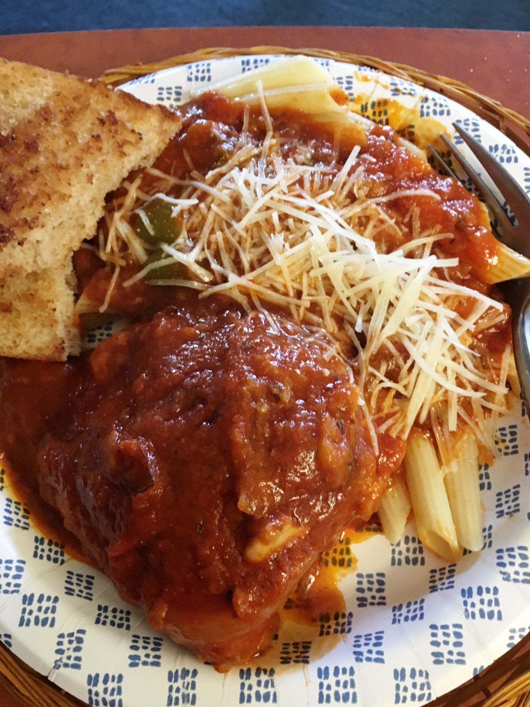

Chicken Cacciatore

Description
Hearty and satisfying and easy enough for a weeknight! Serve over rice or your favorite pasta and garnish with grated Parmesan cheese.
Ingredients
- 3 (8 ounce) bone-in chicken legs with skin
- ⅔ cup all-purpose flour
- ¼ cup olive oil
- 1 medium green bell pepper, cut into 2-inch pieces
- ½ small onion, sliced
- 4 cloves garlic, sliced, or more to taste
- ½ teaspoon dried oregano
- ¼ teaspoon red pepper flakes
- ¼ teaspoon salt
- ¼ teaspoon ground black pepper
- 1 (32 ounce) jar roasted red pepper and garlic tomato sauce
- 1 ½ cups water, or as needed
Directions
- Dip chicken pieces in flour and shake off excess.
-
Heat oil in a 10-inch skillet over medium-high heat. Add chicken and brown well, 4 to 5 minutes per side. Remove chicken from the pan and set aside. Drain most of the oil from the skillet, leaving about 1/8 inch.
-
Add bell pepper, onion, garlic, oregano, pepper flakes, salt, and pepper to the skillet. Sauté, stirring constantly, for 2 minutes. Pour in spaghetti sauce and add enough water to thin mixture just a little; sauce will thicken as it cooks. Stir well and add chicken to the sauce. Spoon sauce over chicken to coat and bring to a simmer.
-
Cover, lower heat, and cook, turning chicken and scraping the bottom of the pan often, until chicken is no longer pink at the bone and the juices run clear, about 40 minutes.
Cook's Note:
I use a Kroger® roasted red pepper spaghetti sauce. You can use your favorite.